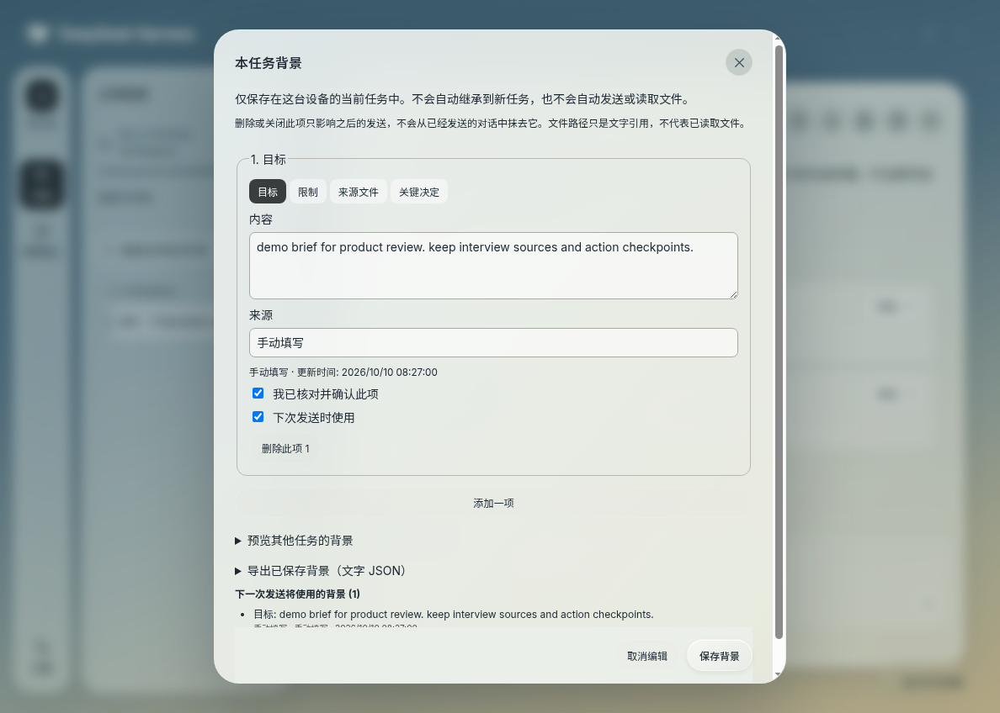
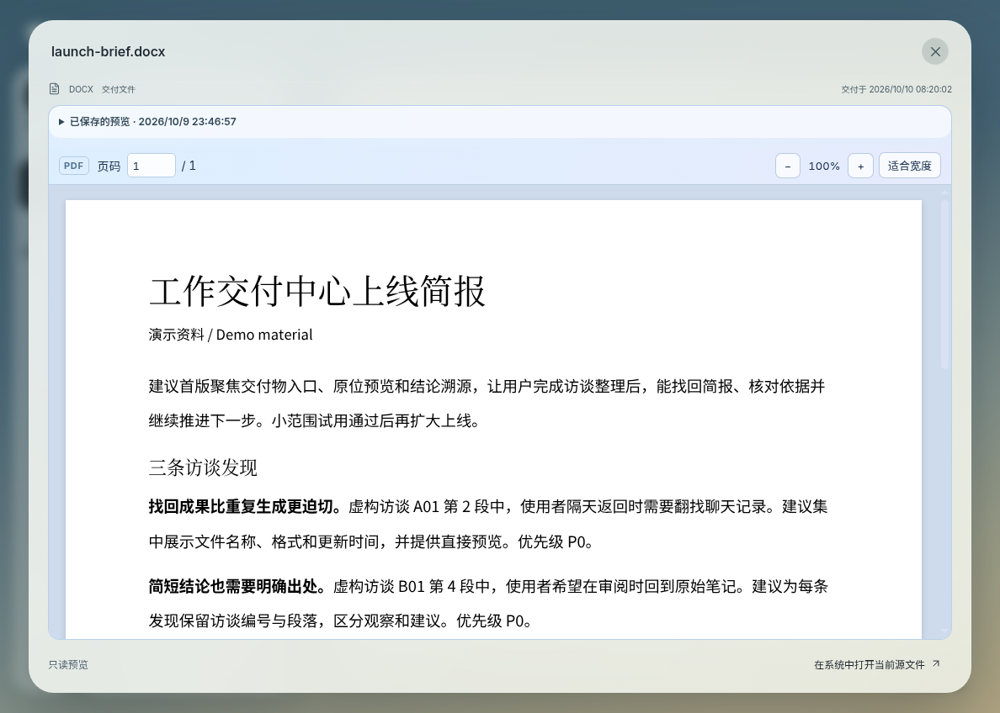

A task-first desktop for DeepSeek Harness. Research, write, explore code, and review documents with your conversations, agents, and results in one place.
Actual Linux desktop captureRecorded in the app · Sample task
01 / A task-first workspaceOffice & creative work · Code & developmentChinese & English · Keyboard friendly
The work, in one place
From “can you help?” to something you can use.
Shape a clear brief, follow the work as it unfolds, and open the result right beside the conversation. Every task has room for its context, decisions, and next steps.
01 /
Your task. Your level of detail.
Choose office and creative work, development, or both. Switch between results, key steps, and the full process, with approvals and important issues always within reach.
Results onlyKey detailsFull details
02 /
Keep the useful context.
Keep goals, constraints, and decisions close to the conversation. Start from an editable research, document, or review brief, and preview the background for your next message.
Task backgroundEditable starters
03 /
Open the actual result.
Open PDFs, Word documents, PowerPoint slides, and spreadsheets inside the task. Saved previews and capture timestamps make it easy to return to the version you reviewed.
Local previewsTimestamped captures
A task, from start to finish
Follow the work. Open the result.
Follow one sample task from reading source material to reviewing its deliveries. Choose a step to look closer.
An 18-second edited tour of a sample task in the actual Linux Electron app: source reading, recorded actions, delivered files, and local document previews. Select Play to explore.

Continue with confidence
Pick up exactly where you left off.
Per-task drafts, conversation search, and selected-text quotes keep your train of thought close. Review recent changes, then return to the latest message when you are ready.
A clear moment to decideReview the operation and its context, then allow once or decline. Task status keeps connection changes and interruptions visible.
Teams, when the task needs themEnable collaboration for a task and follow its recorded members, assigned work, and dependencies in one progress view.
From conversation to deliverable
The file is part of the work.
Open a delivery beside the conversation. Turn PDF pages, zoom into a Word document, or switch worksheet tabs to inspect saved values and formulas. Office previews are converted locally.
Read with focus: page navigation, text selection, zoom, and worksheet tabs bring the details into view.
Return with confidence: select a retained preview or choose Read current file to capture a fresh view.

Extensions · 0.2.0 pre-release
Bring the right capabilities to the task.
Add reusable methods and useful connections. Review sources, changes, and scope in one place, then choose what to put to work.
Available in the v0.2.0 pre-release: plugins, Skills, and MCP, ready to bring into your tasks.
Inside a task, Capabilities shows the Skills available for its folder and Agent mode. Continue in the Compatibility workspace with the same task and running Harness.
Built around your task
Your context. Your connection.
Task background stays scoped
Goals, constraints, and decisions are stored on this device, scoped to each task. Review and enable the entries you want, then inspect exactly what will accompany your next message.
Connect your model
Use official Harness provider setup or the dedicated ChatGPT/Codex authorization flow. Select an available model and start working with your own provider account. Provider fees and account limits apply.
Get the desktop
Your next workspace starts here.
Version 0.2.0 is available as a pre-release for macOS, Windows, and Linux. Sign in with repository access to download an installer and its SHA-256 checksums from the release page.
Test-build installation: initial installers are unsigned; macOS builds are not notarized. Choose a completed release with its manifest and SHA-256 checksums. Keep OS security protections enabled and report installation warnings.
What should I know about previews?
Previews are read-only and show saved spreadsheet values. Formula calculation, macros, and editing stay with your document app. Complex formatting may differ. Saved previews have capacity and retention limits; keep your source files for long-term storage.
How are connections and local data handled?
Model requests send content to your configured provider. Task background and previews are stored locally; file references are text until a tool reads the file. Credentials are kept in the local runtime credential file rather than an OS-encrypted keychain. Team members share the task workspace. This website stores language and theme preferences locally; GitHub Pages may retain hosting logs.
Who makes Desktop Next?
Desktop Next is an independent community desktop client for DeepSeek Harness. DeepSeek names and marks belong to their respective owners.
How do I access the early builds?
Sign in to GitHub with an account that has access to the private app repository. GitHub may show 404 for other accounts. This public website introduces the product; installers and app source are distributed through the private repository.
How were the product captures made?
The captures show the actual Linux Electron app with sample tasks and documents. Walkthroughs use edited pacing and controlled demonstration events, rather than live model execution.